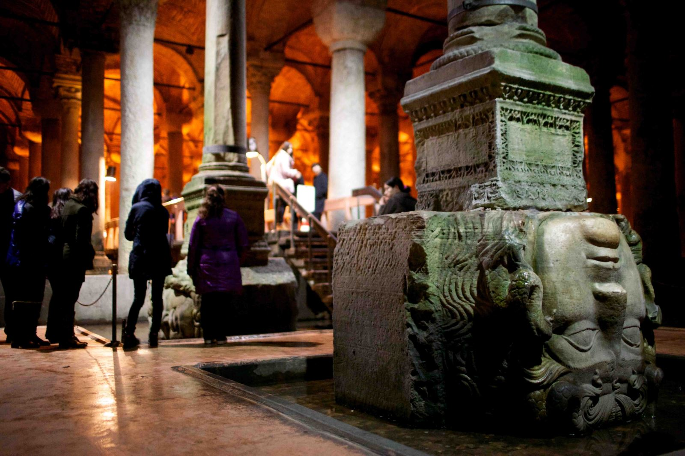
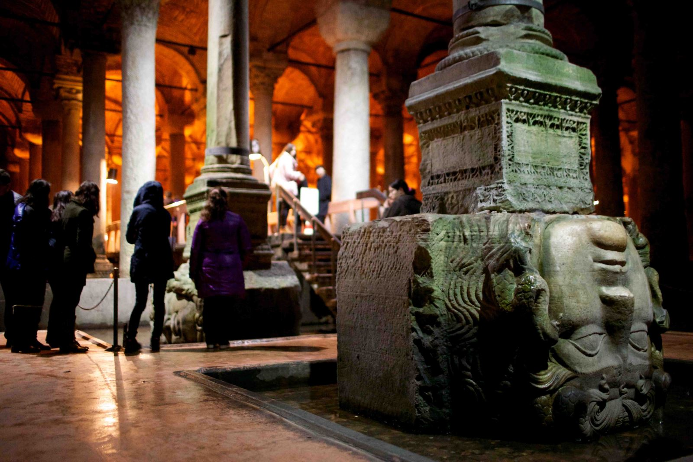

532 yılında İmparator Justinianus tarafından inşa ettirilen Yerebatan Sarnıcı Stoa Bazilikası'nın altında yer aldığı için Bazilika Sarnıcı olarak da bilinir. Sarnıç, uzunluğu 140 metre genişliği 70 metre dikdörtgen biçimde bir alanı kapsayan dev bir yapıdır. 52 basamaklı taş bir merdivenle inilen sarnıcın içerisinde her biri 9 metre yüksekliğinde 336 sütun bulunmaktadır. Birbirine 4.80 metre aralıklarla dikilen bu sütunlar, her sırada 28 tane 12 sıra meydana getirirler. Suyun içerisinde yükselen bu sütunlar uçsuz bucaksız bir ormanı hatırlatmakta ve ziyaretçiyi sarnıca girer girmez etkilemektedir. Sarnıcın tavan ağırlığı haç biçiminde tonozlar yuvarlak, kemerler vasıtasıyla sütunlara aktarılmıştır, çoğunluğu daha eski yapılardan toplandığı anlaşılan ve çeşitli mermer cinslerinden granitten yontulmuş sütunların büyük bir kısmı tek parçadan, bir kısmı da üst üste iki parçadan oluşmaktadır. Bu sütunların başlıkları yer yer farklı özellikler taşır. Bunlardan 98 adedi Corinth üslubu yansıtırken bir bölümünde Dor üslubunu yansıtmaktadır. Sarnıcın tuğladan örülmüş, 4.80 metre kalınlığındaki duvarları ve tuğla döşeli zemini Horasan harcından kalın bir tabakayla sıvanarak su geçmez hale getirilmiştir. Toplam 9 bin 800 metrekare bir alanı bulunan bu sarnıç yaklaşık 100 bin ton su depolama kapasitesine sahiptir.
 

İnşasında 7 bin kölenin çalıştığı sarnıcın suyu imparator Valens tarafından (368) yılında yaptırılan 971 metre uzunluğundaki Valens (Bozdoğan) kemeri ile imparator Justinianus'un yaptırdığı 115.45 metre uzunluğundaki Mağlova Kemeri yardımıyla şehre 19 kilometre mesafede Belgrat ormanlarındaki Eğrikapı su taksim merkezinden getirilmiştir. Sarnıçtaki sütunların, köşeli veya yivli biçimde olan birkaç tanesi hariç büyük çoğunluğu silindir biçimindedir. Bu sütunlar içerisinde üzeri oyma ve kabartma halinde Tavus Gözü, Sarkık Dal, Gözyaşı şekillerinin tekrarıyla süslenmiş olanı özellikle dikkati çeker. Bu sütun Bizans devrinde "Farum Tauri" denilen bugünkü Beyazıd meydanında kalıntıları bulunan IV. yüzyıl zamanına ait büyük Theodesiusun (379-395) zafer takındaki sütunların benzeridir. Sarnıcın kuzeybatı köşesindeki iki sütunun altında kaide olarak kullanılan iki Medusa başı Roma Çağı heykel sanatının şaheser örneklerindendir. Sarnıcı ziyarete gelenlerin hayretler içerisinde seyrettikleri IV. yüzyıla ait bu başların hangi yapıdan alınarak buraya getirildiği konusunda kesin bir bilgi olmamakla birlikte Genç Roma Çağı'na ait antik bir yapıdan sökülerek buraya getirildiği düşünülmektedir. Yerebatan Sarnıcı, İstanbul'un Osmanlılar tarafından 1453 yılında fethinden sonra, bir müddet daha kullanılmış ve padişahların oturduğu Topkapı Sarayı'nın bahçelerine buradan su verilmiştir. Durgun su yerine çeşme suyunu yani akan suyu tercih eden Osmanlıların şehirde kendi su tesislerini kurduktan sonra kullanmadıkları anlaşılan sarnıç, 1544-1550 yıllarında Bizans kalıntılarını araştırmak üzere İstanbul'a gelen Hollandalı gezgin P. Gyllius tarafından yeniden keşfedilmiştir. Basilika Sarnıcı kurulduğundan günümüze kadar çeşitli onarımlardan geçmiştir. Osmanlı imparatorluğu döneminde iki defa restore edilen sarnıcın ilk onarımı 18. yüzyıda III. Ahmet zamanında Mimar Kayserili Mehmet Ağa tarafından yaptırılmıştır. 19. yüzyılda ikinci büyük onarım Sultan II. Abdülhamit (1876-1909) zamanındadır. Cumhuriyet dönemindeki en büyük onarım 1985 yılında yapılmıştır. İçerisindeki 50 bin ton çamurun çıkartılması ve gezi platformunun yapılmasıyla birlikte 9 Eylül 1987 yılında tamamlanmış ve tekrar ziyarete açılmıştır.